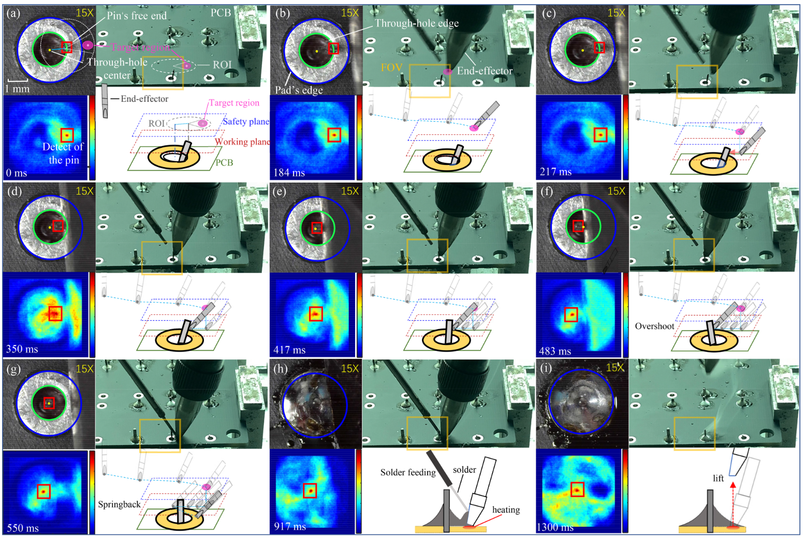

Hao Ren [CV]Email: renhao_hnu@163.comPhone: (86) 157-0075-8956 |
 |
Education & Work Experience
Hong Kong University of Science and Technology
Postdoc Research Fellowship (July, 2025 - Now) & Visting Student (Sep, 2022 - July, 2025)
Sep, 2022- ~
Research interests: Miniture robot system & Tactile sensory system Supervisor: Yajing Shen
City University of Hong Kong
PhD candidate
Sep, 2021- ~
GPA: 3.82/4.0 Supervisor: Yajing Shen
University of Chinese Academy of Sciences
Master in Control Engineering (Outstanding Graduate）
Sep, 2018-July, 2021
GPA: 3.72/4.0 Ranking: TOP 2% Supervisor: Xinyu Wu
Hunan University
Bachelor in Electrical Engineering and Automatio (Outstanding Graduate）
Sep, 2014-Jun, 2018
GPA: 3.71/4.0 Ranking: 6/236 Supervisor: Yaonan Wang, Lu Fang, Haoming Chen
News
- [07/2025] Succefully passsed my PhD defense !!!.
- [03/2025] One paper was accepted by Nature Communications .
- [02/2025] One paper was accepted by Engineering .
- [12/2024] Successfully held a session at IEEE ROBIO 2024 (Bangkok) .
- [11/2024] One paper was accepted by Biosensors and Bioelectronics .
Honors & Awards
| China National Scholarship for Graduate Student (0.2%) |
| China National Scholarship for Undergraduate Student (0.2%) |
| Beijing Outstanding Graduate Student (1%) |
| Hunan Province Outstanding Undergraduate Student in Innovation and Entrepreneurship (0.4%) |
| The president scholarship of SIAT, Chinese Academy of Sciences (1%) |
| Second Prize, World Robot Contest , 2017 |
| First Prize, Second Prize, China Robot Competition, 2016 & 2017 |
| Third Prize, China Physics Tournament, 2015. |
Selected Publications [Google Scholar]

|
A robust and omnidirectional-sensitive electronic antenna for tactile-induced perception. Hao Ren, Liu Yang, Hong-yuan Chang, Tieshan Zhang, Gen Li, Xiong Yang, Yifeng Tang, Wanfeng Shang, Yajing Shen. Nature Communications (Nat. Commun.), 2025. |
| A Soft Tactile Unit with Three-Dimensional Force and Temperature Mathematical Decoupling Ability for Robots. X Yang, H Ren, D Guo, Z Ling, T Zhang, G Li, Y Tang, ..., Y Shen. Engineering (Engineering), 2025. |
|

|
A portable wireless spirometer device for long-term pulmonary function monitoring and training. H Ren, J Wang, L Yang, T Zhang, G Li, Y Tang, TND Yu, Y Shen. Biosensors and Bioelectronics (Biosens. Bioelectron.), 2024. |
| High-Precise Metallic Helical Microstructure Fabrication by Rotational Nanorobotic Manipulation System With Tilted Mandrel Compensation. Tieshan Zhang*, Hao Ren* (Co-first author), Gen Li, Panbing Wang, Wanfeng Shang, Yajing Shen. IEEE/ASME Transactions on Mechatronics (IEEE TMECH), 2023. |
|
|  | High precision PCB soldering with pin springback compensation by robotic micromanipulation. Wanfeng Shang (Supervisor), Hao Ren, Zhengkun Yi, Tiantian Xu, Xinyu Wu. IEEE/ASME Transactions on Mechatronics (IEEE TMECH), 2023. |
| Dual Rotating Microsphere Using Robotic Feedforward Compensation Control of Cooperative
Flexible Micropipettes. Wanfeng Shang (Supervisor), Hao Ren, Mingjian Zhu, Tiantian Xu, Xinyu Wu. IEEE Transactions on Automation Science and Engineering (IEEE TASE), 2020. |
|
| Robotic Micromanipulation for Active Pin Alignment in Electronic Soldering Industry. Hao Ren, Wanfeng Shang, Niannian Li, Yong He, Zefeng Yan, Xinyu Wu. IEEE International Conference on Robotics and Automation (ICRA), 2021. |
|
| A fast parameterized gait planning method for a lower-limb exoskeleton robot. Hao Ren, Wanfeng Shang, Niannian Li, Xinyu Wu. International Journal of Advanced Robotic Systems (IJARS), 2020. |
|
| Multi-objective Gait Optimization of Lower-limb Exoskeleton Robot. Hao Ren, Wanfeng Shang, Niannian Li, Xinyu Wu. IEEE International Conference on Realtime Computing and Robotics (RCAR), 2020. |
|
| On-line Dynamic Gait Generation Model for Wearable Robot with User's Motion Intention. Hao Ren, Du-Xin Liu, Niannian Li, Yong He, Zefeng Yan, Xinyu Wu. IEEE International Conference on Information and Automation (ICIA), 2018. |
|
| Centering of a Miniature Rotation Robot for Multi-Directional Imaging Under Microscopy. Wanfeng Shang (Supervisor), Mingjian Zhu, Hao Ren, Xinyu Wu. IEEE Transactions on Nanotechnology (IEEE TNAO), 2020. |
|
Extra Experience
Student Leader: Organize and train new members to participate in student competitions, including China Electronic Design Competition, Robot Competition, Smart Car competition and Engineering Ability Competition (Led the team to obtain more than 20 national and provincial awards).
Skills
| Programming: python, C, C++, LaTeX |
| Algorithm Framework: OpenCV, Tensorflow, Pytorch, PyQT5, Computer vision, Reinforcement learning |
| EDA: Altium Desinger, Multism, ESP32, STM32, Arduino |